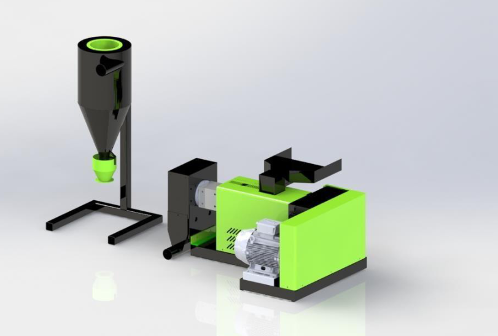
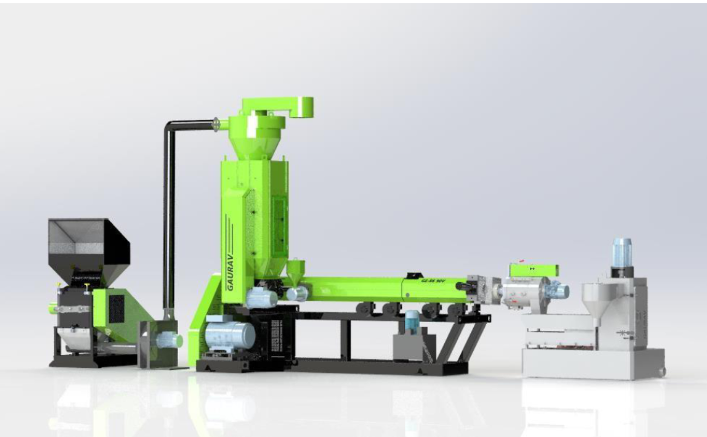
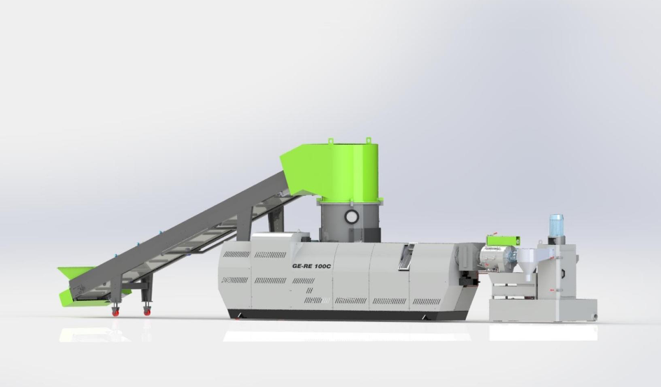
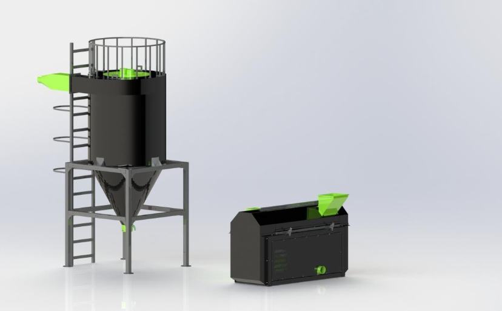
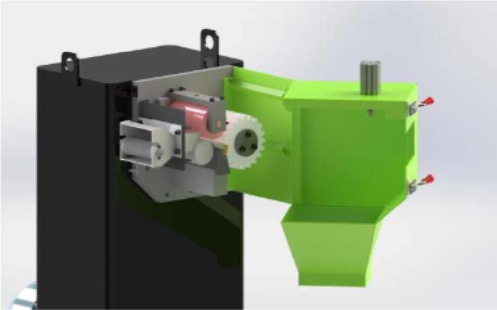
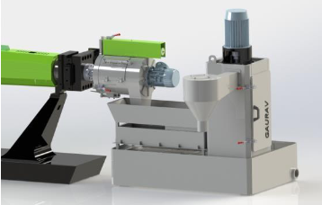
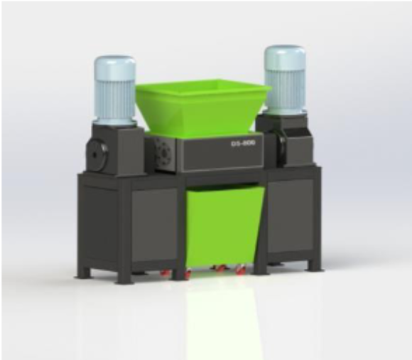
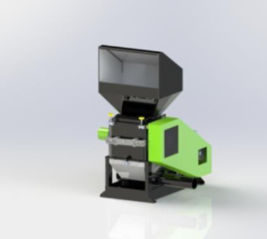

AIR COOL Series

- Suitable for 40 to 60 Kg/Hr. PE waste
- Ideal small waste option, ideally liner bags
- Simple design compact size
- A mini setup for new startups in Woven Sack / Blown films
FORCE FEEDER Series

- Suitable for 100 to 250 Kg/Hr. PE / PP waste
- Designed for HDPE / PP Raffia, Liner bags, BOPP etc.
- No Agglomeration recycling even up to 12 microns BOPP
- Equipped with Grinder, Water ring die face Cutter Unit
- Conveyor Belt / Vacuum Tank optional
CUTTER COMPACTOR Series

- Suitable for High out put 300 Kg/hr to 1000Kg/Hr
- Ideal only for higher capacity,Consistent quality and quantity plant waste.
MOTHER BABY Series with Power boost Vacuuming

- Suitable for Highly printed BOPP/ PP bags waste
- Designed keeping vacuuming expose area into consideration with power boost, strand vacuuming.
WASH : Dry / Wet

- Available washing Lines in Both wet & Dry formats
- But our Dry wash sets a Unique industry standard.Cleaning 80% dust with zero use of water.
ANCILLARIES Palletizers

- ROTARY STRAND CUTTER (GE-SC Series): Changing polymer colors is lot easier, no more residuals. Thanks to Gaurav strand palletizing system GE-SC. Clean fresh pallets with every new batch. Whereas changing blades have became quick & user-friendly. A perfect small companion for masterbatch, compounding and recycling industry. Variants available up to 500 Kg/Hr.
ANCILLARIES Palletizers

- WATER RING DIE-FACE CUTTER (GE-DFC Series): Consistent granule shape to mix with the virgin granules precision with consistent quality, Versatile for PP, LD, HD, EVA, BOPP. PC, HIPS, Delrin etc. up to 35 MFI in water ring. All new filtration unit smallest polymer fines is now collected separately NO CHILLER requirement is our long-standing record. Variants up to 1000 Kg/Hr.
ANCILLARIES Size Reduction

- DUAL SHAFT SHREDDER (GE-DS SERIES): Be it big article or bulky solid waste a perfect infeed for recycling is now possible. Operate on low RPMs and inbuilt reverse feed on heavy loads make machine safe and long lasting. Shredding has been never this hassle free, plug and play. Available in 600 mm and 800 mm wide mouth feed size.
ANCILLARIES Size Reduction

- ROTARY GRINDERS & CRUSHERS (GE-GR SERIES): Suitable to shear films, filaments, or fabric. Known for its long-standing durability. Available with scissor cutting blades. Combination of rotary & fix blades. GE-GR provides an easy change over options and quick setup settings. Whether be it hard article waste or be high strength fabric like Raffia bags. GE-GR grinders always probed test of time. Variants in 18" / 21" / 24" formats.